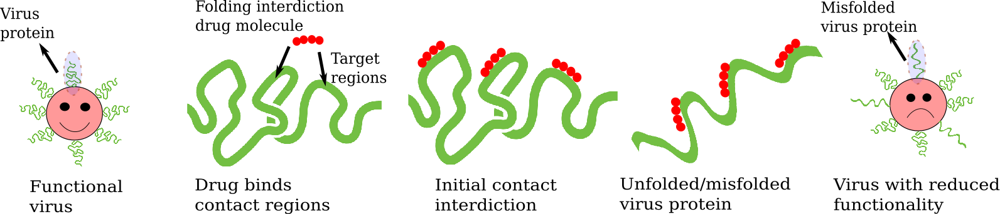

- This grant will fund research that enables accurate prediction of pathways for
protein folding and unfolding, with application to computer-aided anti-viral drug design, control of
protein-based nano-machines, and treatment of diseases related to protein misfolding such as
Alzheimer’s, thereby promoting the progress of science, and advancing the national health and
prosperity. Physics-based approaches reliably capture the processes that govern conformational changes of
protein molecules, but typically do so at great computational expense. A recently developed modeling paradigm, which
describes protein molecules in terms of large numbers of rigid nano-linkages that fold under the influence of
interatomic forces, can significantly reduce the computational burden, but presents challenges with ensuring
that the predicted folding and unfolding pathways are realistic and not artificially driven by the numerical
algorithm. In this project, this challenge is overcome using an optimization-based control theoretic framework
to guide both folding and unfolding dynamics while respecting biologically realistic rates of change of
conformational entropy. Knowledge gained from the development of this framework will enable systematic
investigation of protein conformational dynamics, including unfolding pathways of coronavirus spike proteins, while
also advancing previously unexplored control tools that may help robots navigate cluttered environments. A unique
approach to sonification of protein pathway data will make this knowledge broadly accessible and will be
integrated in course projects for undergraduate students in engineering, computer science, and art, as well
as in research activities aiming to mentor high school students in STEM.
- This research aims to bridge the two seemingly unrelated fields of optimization-based nonlinear control and
conformational dynamics of proteins through rigorous development and investigation of computationally efficient
and numerically stable algorithms that accurately predict protein folding and unfolding while avoiding pathways
associated with artificially rapid loss of conformational entropy. This project will fill the critical gap in
knowledge of encoding entropy-loss constraints using the kinetostatic compliance method by developing a
novel non-iterative, large-scale, quadratic programming-based control scheme over hyper-ellipsoids for protein
folding dynamics with large state-space dimensions; constructing a large-scale, variable-step-size, numerical
integration algorithm that is expected to reduce the number of integration steps, where each step requires the
burdensome computation of a very large interatomic force vector field; and developing a control theoretic approach for
systematically investigating the problem of protein unfolding. Ground truth data for validation will be obtained from
all-atom molecular dynamics simulations and, in the case of the model protein barnase, publicly available experimental
data from optical tweezer-based mechanical unfolding experiments.
- Introduction to protein folding:
YouTube Video by Neural Academy
- Deepmind protein folding video:
YouTube Video by DeepMind.
Folding@Home:
Use your PC as part of the Folding@Home supercomputing project.